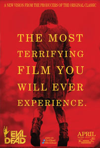

Review Evil Dead
Minggu, 1 Desember 2013

The Most Terrifying Film You Will Ever Experience? Hardly. Dan merilis versi terbaru dari The Evil Dead (1981) setelah kecerdasan The Cabin in the Woods (2011) bahkan semakin membuat tagline tersebut terkesan terlalu berlebihan. Sejujurnya, The Evil Dead yang berhasil memperkenalkan nama Sam Raimi ke kalangan penikmat film – khususnya para penggemar film-film horor – di berbagai penjuru dunia tersebut bukanlah sebuah film horor yang begitu menakutkan. Raimi mampu menggarap The Evil Dead dengan baik, memadukan unsur horor dengan komedi yang kental sekaligus mendefinisikan kembali arti kehadiran tumpahan darah pada sebuah film horor mainstream Hollywood di kala itu. Namun mengerikan? Not really. Lalu apa yang ingin dicapai Raimi dengan memberikan kesempatan pada sutradara asal Uruguay, Fede Alvarez, untuk me-remake salah satu filmnya yang paling fenomenal tersebut?
Well… lewat presentasi akhir yang dihadirkan oleh Evil Dead – Evil Dead, tanpa tambahan the, Raimi sepertinya hanya berniat untuk memberikan update terbaru bagi film horor klasiknya. Jika di tahun 1981 ia harus memutar otak dan berhadapan dengan banyak permasalahan teknis untuk sekedar menghadirkan deretan visual yang bersimbahkan darah, maka di tahun 2013 ia tentu saja tidak harus berhadapan dengan hal tersebut. Evil Dead bahkan diberkahi dengan deretan adegan penuh kekerasan yang akan mampu membuat banyak orang terkejut dengan tingkat kesadisannya. Secara singkat, Evil Dead akan mampu memuaskan hasrat setiap penggemar film horor yang mendapatkan kepuasan mereka dari adegan-adegan yang mengharuskan adanya mutilasi anggota tubuh manusia. Dan ditampilkan dengan aliran darah yang menyeruak ke berbagai adegan film.
Sayangnya, naskah cerita arahan Alvarez dan Rodo Sayagues justru menanggalkan satu keunggulan yang membuatThe Evil Dead dahulu tampil begitu memikat: kecerdasan dalam memadukan elemen horor dengan black comedy yang hadir dalam deretan dialog dan adegannya.Sama sekali bukan masalah jika Alvarez lebih memilih untuk menghadirkanEvil Dead lewat jalur penceritaan yang lebih serius. Namun dengan beberapa kelemahan yang terdapat pada pengembangan cerita dan karakter, Evil Dead terasa menjauh dari berbagai daya tarik yang dimiliki oleh film orisinalnya untuk kemudian terkesan berakhir dengan kualitas film-film horor modern yang murni mengandalkan deretan adegan sadis belaka.
Alvarez dan Sayagues sendiri melakukan sedikit perubahan pada alur cerita Evil Dead. Kelima karakter yang hadir dalam jalan cerita film ini melakukan perjalanan ke tengah hutan dan menginap di salah satu kabin terpencil disana bukanlah untuk menghabiskan masa akhir pekan mereka… melainkan untuk melakukan detoksifikasi heroin terhadap salah seorang karakternya, Mia (Jane Levy). Mia sendiri ditemani oleh dua sahabatnya, Olivia (Jessica Lucas) dan Eric (Lou Taylor Pucci), serta kakaknya, David (Shiloh Fernandez) yang telah lama tidak ia jumpai, yang datang bersama dengan kekasihnya, Natalie (Elizabeth Blackmore). Berlanjut dengan plot cerita yang familiar, salah seorang karakter tersebut kemudian membacakan sebuah mantra terlarang dari Book of the Dead, yang membangkitkan sesosok arwah yang haus darah, yang kemudian merasuki salah seorang karakter lainnya dan kemudian menebarkan deretan teror berdarah nan mematikan kepada seluruh karakter yang ada di kabin tersebut.
Naskah cerita arahan Alvarez dan Sayagues jelas terlihat berusaha menjauh dari sentuhan komedi yang pernah diterapkan Sam Raimi pada The Evil Dead – atau Joss Whedon dan Drew Goddard pada The Cabin in the Woods. Permasalahan datang ketika keduanya juga sama sekali tidak memiliki kemampuan yang memadai untuk menciptakan dramatisasi yang kuat pada jalinan cerita Evil Dead. Dalam 92 menit presentasi ceritanya, Evil Dead seringkali terasa bagaikan sebuah rangkaian kisah kesialan beraroma supranatural yang menimpa lima orang karakter di dalam jalan ceritanya. Hasilnya, Alvarez dan Sayagues terjebak dalam deretan formula klise film-film horor Hollywood tanpa pernah mampu mengolahnya menjadi sebuah presentasi cerita yang lebih mengikat. Penonton tahu apa yang harusnya mereka harapkan dari film ini… dan… yah… itulah yang mereka dapatkan. Tidak ada kejutan sama sekali yang mampu membuat Evil Dead terasa lebih menyenangkan untuk ditelusuri.
Jika The Cabin in the Woods mampu memainkan deretan karakterisasinya yang begitu klise untuk kemudian memanfaatkan mereka sebagai bagian penting dari jalan cerita, maka karakter-karakter yang mengisi alur kisah Evil Dead terkesan tak lebih dari sekedar obyek penderita yang dapat saja terbunuh sewaktu-waktu – setelah melalui deretan adegan sadis tentunya. Deretan pemeran film ini, mulai dari Jane Levy, Shiloh Fernandez hingga Jessica Lucas, tampil dalam kapasitas yang cukup mumpuni dalam menghidupkan setiap karakter yang mereka perankan. Sayangnya, dengan deretan karakter yang begitu dangkal, tidak banyak yang dapat dilakukan oleh deretan aktor maupun aktris tersebut untuk membuat karakter mereka menjadi lebih mengesankan kehadirannya.
Evil Dead sendiri bukanlah sebuah presentasi yang buruk secara keseluruhan. Fede Alvarez mungkin membutuhkan beberapa waktu lagi untuk dapat mengembangkan kemampuan berceritanya. Tidak seperti Sam Raimi yang jeli dalam memanfaatkan berbagai formula klasik film horor Hollywood dan mengubahnya menjadi sebuah presentasi yang mencekam sekaligus menghibur, Alfarez justru terkesan hanya mampu menghadirkan versi modern dari Evil Deaddengan cara melakukan penambahan tingkat kesadisan dan guyuran darah di sepanjang adegan penceritaan. Walau begitu, Evil Dead membuktikan bahwa Alvarez memiliki kemampuan yang handal untuk menghadirkan atmosfer horor yang mencekam di sepanjang penceritaan film. Ditambah dengan dukungan tata produksi yang kuat, mulai dari tata sinematografi arahan Aaron Morton hingga tata musik karya Roque Baños, Alfarez setidaknya mampu membuat Evil Dead tampil menghibur (dan sangat memuaskan) bagi para penikmat film-film horor sejenis.